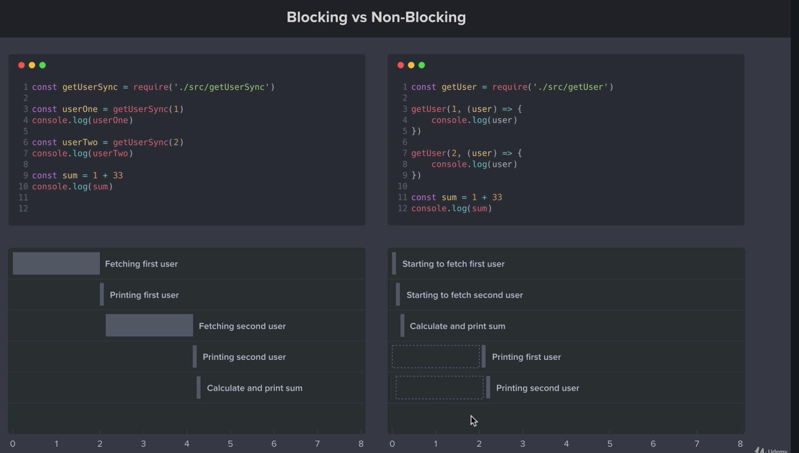

Callback is an asynchronous equivalent for a function. A callback function is called at the completion of a given task. Node makes heavy use of callbacks. All the APIs of Node are written in such a way that they support callbacks.
For example, a function to read a file may start reading file and return the control to the execution environment immediately so that the next instruction can be executed. Once file I/O is complete, it will call the callback function while passing the callback function, the content of the file as a parameter. So there is no blocking or wait for File I/O. This makes Node.js highly scalable, as it can process a high number of requests without waiting for any function to return results.
let's look at a given example, a blocking vs a non-blocking.
So the code on each side does exactly the same, fetching tow users and then calculate the sum of two numbers. The diffence is that on the right side we have blocking code which means that when we are fetching the first user from the database wait for the input and print it out. On the right side we use non-blocking code with the callback function, which means that we start fetching the first user and return immediately to the next instruction. So we in the mean time can execute some other code. This way is way faster as we shown on the picture. You can read more about callback functions here.
The map() method creats a new array populated with the results of calling a provided function on every element in the calling array
const arr = [1, 4, 9, 16];
// pass a function to map
const map1 = arr.map(x => x * 2);
console.log(map1);
// expected output: Array [2, 8, 18, 32]
let newArray = arr.map(callback(currentValue[, index[, array]]) {
// return element for newArray, after executing something
}[, thisArg]);
callback
Function that is called for every element of arr. Each time callback executes, the returned value is added to newArray.